Tools that use ngspice as simulator
In more than 15 years of maintenance and development, ngspice earned a good reputation among free spice-based simulators. Ngspice is used as simulator in different tools, both free and commercial. Here is the list of the tools we know about (in alphabetical order). You may find graphical user interfaces with or without schematic capture, circuit development tools as well as development environments for models and devices . The XSPICE Usage deserves its own web page.
Tools for circuit simulation with ngspice
|
Altium Designer 20
Altium Designer 20 represents decades of innovation and development.
According to Altium its product Altium Designer has firmly established
itself as the most widely used PCB design solution on the market. The recent
versions 19 and 20 integrate ngspice for circuit simulation. |
|
Blackboard
allows to generate circuits on stripboards and uses ngspice
for circuit simulation. The author has stopped its
development, the sources are available here. |
| 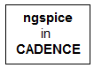 |
ngspice
integration into the CADENCE circuit design
environment is promoted by a toolset offered here. |
| 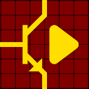 |
CircuitSafari is an Android
application for circuit simulation that runs the ngspice
simulation engine on tablets. It offers interactive electronic
schematic capture and mixed signal simulation with a
touchscreen interface. |
|
CoolSpice is a
SPICE suite and circuit simulation software package.
CoolSpice contains ngspice, a schematics editor with GUI, a
plotter application, and a text editor for manually editing
netlists. |
| 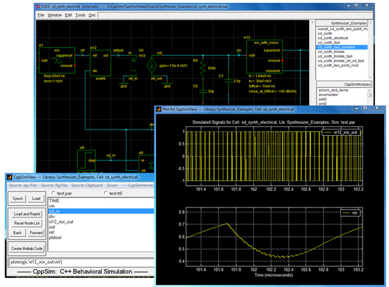 |
Cppsim is a system simulator that
integrates ngspice as transistor-level simulator. Ngspice
shares the schematic capture and postprocessing tools with
the other simulators included in the suite (C++ and
Verilog). |
|
Eagle
is the well known and widely distributed PCB layout software
for every engineer. It offers a complete set of PCB layout
and schematic editing tools, library content, and
community-driven features. From version 8.4 on Eagle integrates
ngspice for circuit simulation. |
| 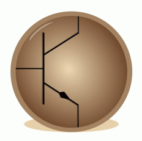 |
eSim is an open source EDA tool
for circuit design, simulation, analysis and PCB design. It
is an integrated tool built using open source software
packages KiCad, ngspice and Scilab and runs on LINUX and MS
Windows. |
| 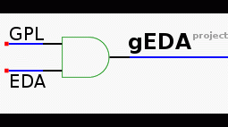 |
The
gEDA project is a full
suite and toolkit of Electronic Design Automation tools. It
uses ngspice for circuit
simulation. |
|
Isotel has developed an
open source
software kit for mixed signal simulation and synthesis
using Eagle
and ngspice. A combination of mature open source packages
yields a usable and working solution of Verilog simulation
with mixed-signal spice, integrating ngspice with Yosys for Verilog RTL
synthesis, Icarus
Verilog for Verilog simulation and synthesis, gtkwave for debugging
on Verilog simulation models, and graphviz for graph
visualization. |
|
KiCad is a cross platform and
open source electronics design automation suite. Its
schematic editor Eeschema fully
integrates shared ngspice as the
simulation tool. The current release of KiCad, version 5.1.5
contains ngspice-30 as its standard simulator. A Youtube
video gives a short introduction, a tutorial is available, that also
includes instructions how to upgrade to ngspice-32. |
| 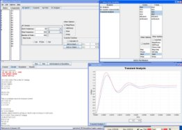 |
Kjwaves is a
frontend for ngspice written in Java using NetBeans and runs
on any platform where you can install 1.5 release of Java
virtual machine. Kjwaves can be used as a simple plotting
program to display the content of a spice RAW file or as a
complete frontend to the simulator. Information on using
Kjwaves with ngspice is found here. Unfortunately its development has
stalled since 2007. |
| 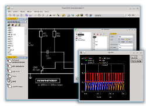 |
Layouteditor includes a
schematic
editor with an interface to ngspice for circuit
simulation. |
|
Memr-Spice is an extension of ngspice
(based on version 30). In Memr-Spice members from the MSDA Lab
at SJTU have implemented compact memristor models to enable the simulation of
memristor devices with other semiconductor devices. |
| 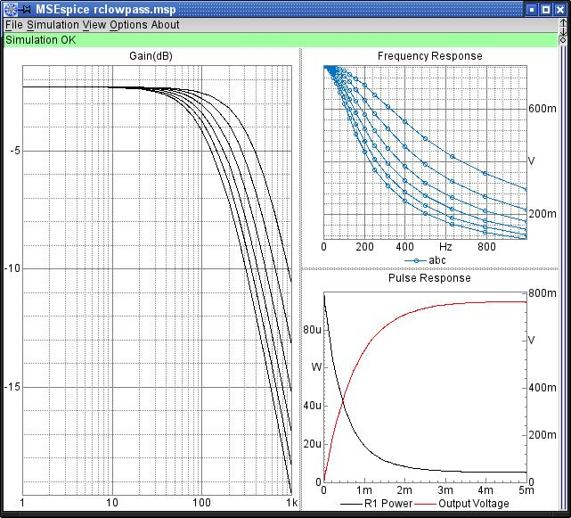 |
MSEspice is
a handy graphical front-end for ngspice. It is made with the
MSEide+MSEgui cross platform development environment for
Free
Pascal. |
| 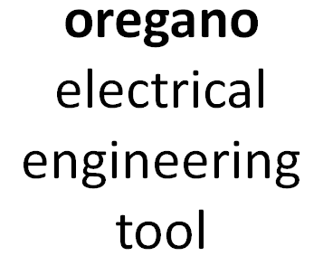 |
Oregano is an application for
schematic capture and simulation of electronic circuits. The
actual simulation is performed by ngspice or other
simulators. |
| 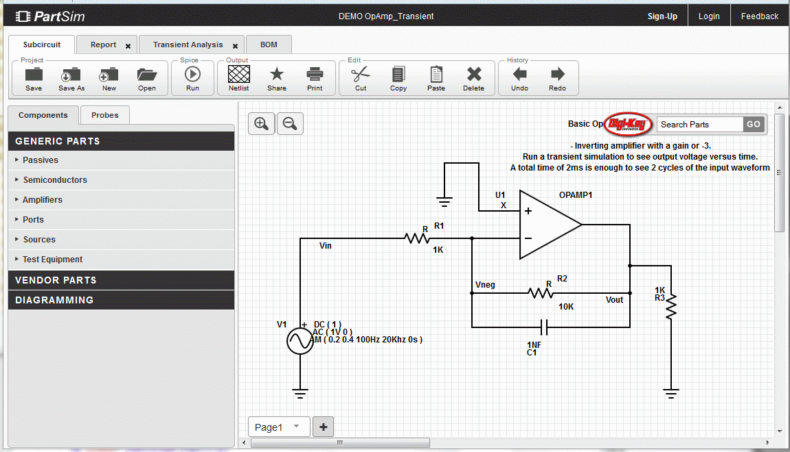 |
PartSim is available in your
web browser, again using ngspice as back-end engine. The
application allows creating circuits with schematic entry
from within the local browser window. The simulation is run
on a remote server and the results are transferred back to
the web browser for visualization and analysis. |
| 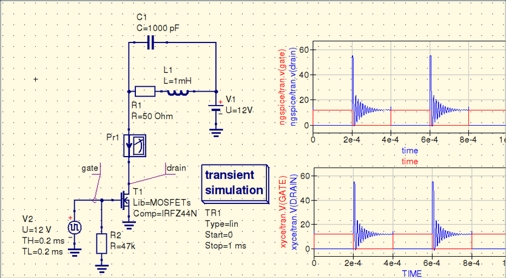 |
Qucs-S (Qucs with Spice) is a
Qucs subproject using free SPICE circuit simulation kernels
(ngspice recommended) with the Qucs GUI. It merges the power
of SPICE and the simplicity of the Qucs GUI. |
| 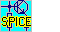 |
SpiceCircuit is a
is a full graphical circuit entry
and simulation application for MS Windows. It is offered
together with 32 bit ngspice-27. You may easily replace
this by newer ngspice versions. It is Freeware for
non-commercial applications. |
| 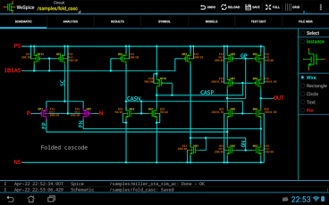 |
WeSpice is an Android
application for circuit simulation that actually runs ngspice
simulation engine on tablets. WeSpice allows to build
hierarchical schematics, symbols and models, perform
simulations and analyze results, locally on the table without
permanent Internet connection. |
|
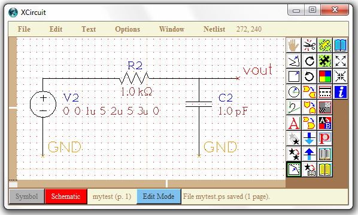 |
XCircuit is an open source
UNIX/X11 (and Windows) program for drawing
publishable-quality electrical circuit schematic diagrams and
related figures, and produce ngspice circuit netlists through
schematic capture. |
|
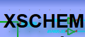 |
XSCHEM is a schematic
capture program. It allows creating a hierarchical
representation of circuits with a top down approach.
By focusing on interfaces, hierarchy and instance properties
a complex system can be described in terms of simpler
building blocks. A ngspice netlist can be generated from
the drawn schematic, allowing the simulation of the circuit. . |
Tools for system and device modeling (and others)
integrating ngspice
| 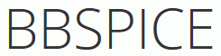 |
BBSPICE with its online
simulator is a set of Python
scripts to enable simulation for synthetic biology with
ngspice. A description is found
here. |
|
efabless has been set up to
re-invent the semiconductor product creation. The company
applies collective and multidisciplinary community knowledge
to all aspects of semiconductor product development. It uses
ngspice in the tool chain. Meanwhile efabless has teamed up
with Google and SkyWater to offer a free open source
IC prototyping capability
on a 130 nm CMOS process from
SkyWater. A ngspice compatible
PDK (process design kit) is available (see tips and examples).
|
|
FEKO is a comprehensive
electromagnetic simulation software tool, based on state of
the art computational electromagnetics (CEM) techniques. It
enables users to solve a wide range of electromagnetic
problems. ngspice allows the integration of SPICE subcircuits
for non-radiating networks as an addition to the FEKO
electromagnetic models. |
| 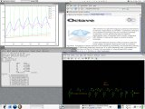 |
GNU Octave is a high-level
language, primarily intended for numerical computations. It
provides a convenient command line interface for solving
linear and nonlinear problems numerically, and for performing
other numerical experiments using a language that is mostly
compatible with Matlab. Information on interfacing Octave
with ngspice is found here.
Octave may be used for post-processing (e.g. plotting)
ngspice rawfile data. |
|
i-MOS is an open platform for
model developers and circuit designers to interact. Model
developers can implement their models over the i-MOS platform
to promote their acceptance and obtain user feedback. Circuit
designers can use the platform to try out the most recent
models of many newly developed devices. The platform provides
ngspice as an online simulation engine. |
|
Loop (Learning Object
Online Platform) is an open-source authoring tool to create
(academic) E-Learning-Content. Web site and documentation are
in German. It integrates ngspice. |
|
MATLAB may be used for
post-processing of ngspice simulation results. A
script is availble for loading the simulation output
(ngspice rawfile) into MATLAB. |
| OpenMETA is an open-source and free-to-use multi-domain modeling, analysis, and design toolset. It allows to bring models and analyses together to get a better view of system performance and trade-offs. ngspice is used by and included with the OpenMETA tools. |
|
PSIM is a design and simulation software to
empower engineers in the power electronics design industry.
PSIM's SPICE Module, powered by CoolCAD Electronics'
CoolSpice, and
thus using ngspice as its engine, provides the capability to
run SPICE simulation in the PSIM environment. |
| 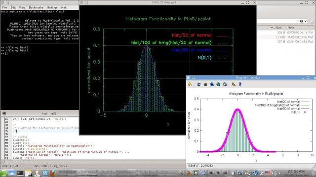 |
rlabplus for LINUX is an interactive, interpreted
scientific programming environment which provides fast
prototyping and program development, similar to Matlab(c). It
integrates ngspice as a simulation tool. |